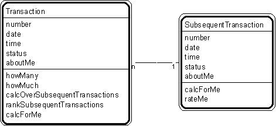

Pattern #7. "Transaction - Subsequent Transaction" Pattern // transaction patterns

Typical object interactions
- howMany --> calcForMe
- howMuch --> calcForMe
- calcOverSubsequentTransactions --> calcForMe
- rankSubsequentTransactions --> rateMe
Examples
- Transaction: agreement, assignment, authorization, contract, delivery, deposit, incident, inquiry, order, payment, problem, report, purchase, refund, registration, rental, reservation, sale, shift, shipment, subscription, time charge, title, withdrawal.
- Transaction - subsequent transaction: application-issue; intermediate result - final result; order-shipment; purchase-payment; reservation-sale; traffic citation - payment.
Combinations
Pattern #3. "Participant-Transaction"
Pattern #4. "Place-Transaction"
Pattern #5. "Specific Item - Transaction"
Pattern #6. "Transaction - Transaction Line Item."
Notes
- Work out transactions in time sequence (the order they usually occur in).
- If subsequent transaction and its line item objects correspond 1-to-1 with transaction and its line item objects, combine them.
Related strategies:
Strategy #17. "Select Transactions" Strategy
Strategy #54. "Establish Transaction Attributes" Strategy
Strategy #76. "Establish Transaction Object Connections" Strategy
Strategy #96. "Establish Transaction Services" Strategy